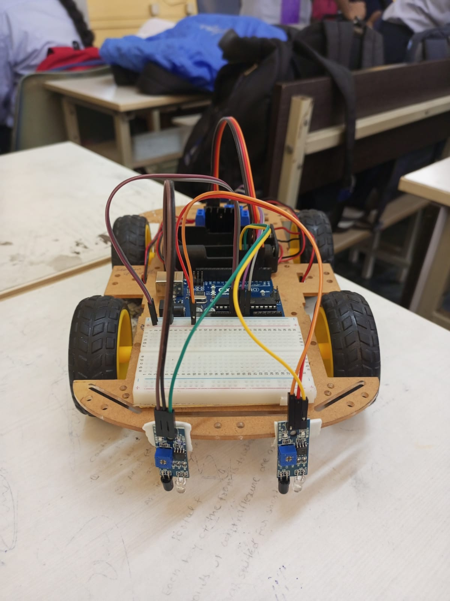

IR Line Follower Car
Working
An IR line follower car operates by continuously reading the floor using Infrared (IR) sensors. These sensors detect a contrasting path (typically a black line on a white surface) and send signals to a microcontroller, which then adjusts the car's wheel motors to keep it perfectly centered.
The entire process works in a cycle.
Working Process
1. Sensing (The Eyes)
- The IR Emitter: An IR LED continuously shines invisible infrared light toward the ground.
- The Receiver: A photodiode measures the amount of light that reflects back.
- The Contrast: White surfaces reflect most of the IR light, while black lines absorb it.
2. Processing (The Brain)
The sensor sends an electrical signal based on the reflection.
For standard 2-sensor setups, this generates digital signals:
- White Surface: High signal (Reflection)
- Black Line: Low signal (No reflection)
3. Decision Making
The microcontroller (Arduino Uno) evaluates the sensor inputs and decides how to steer.
- Both sensors detect white: The car is on track. It moves straight forward.
- Left sensor detects black: The car is veering too far right. The controller directs the car to steer left to re-center.
- Right sensor detects black: The car is veering too far left. The controller directs the car to steer right to re-center.
- Both sensors detect black: The car has reached a junction or the end of the line. The controller stops the motors.
Components Required
| Component | Quantity |
|---|---|
| Arduino Uno | 1 |
| IR Sensors | 2 |
| DC Motors | 4 |
| L298N Motor Driver | 1 |
| Robot Chassis | 1 |
| Battery | 1 |
Project Image
